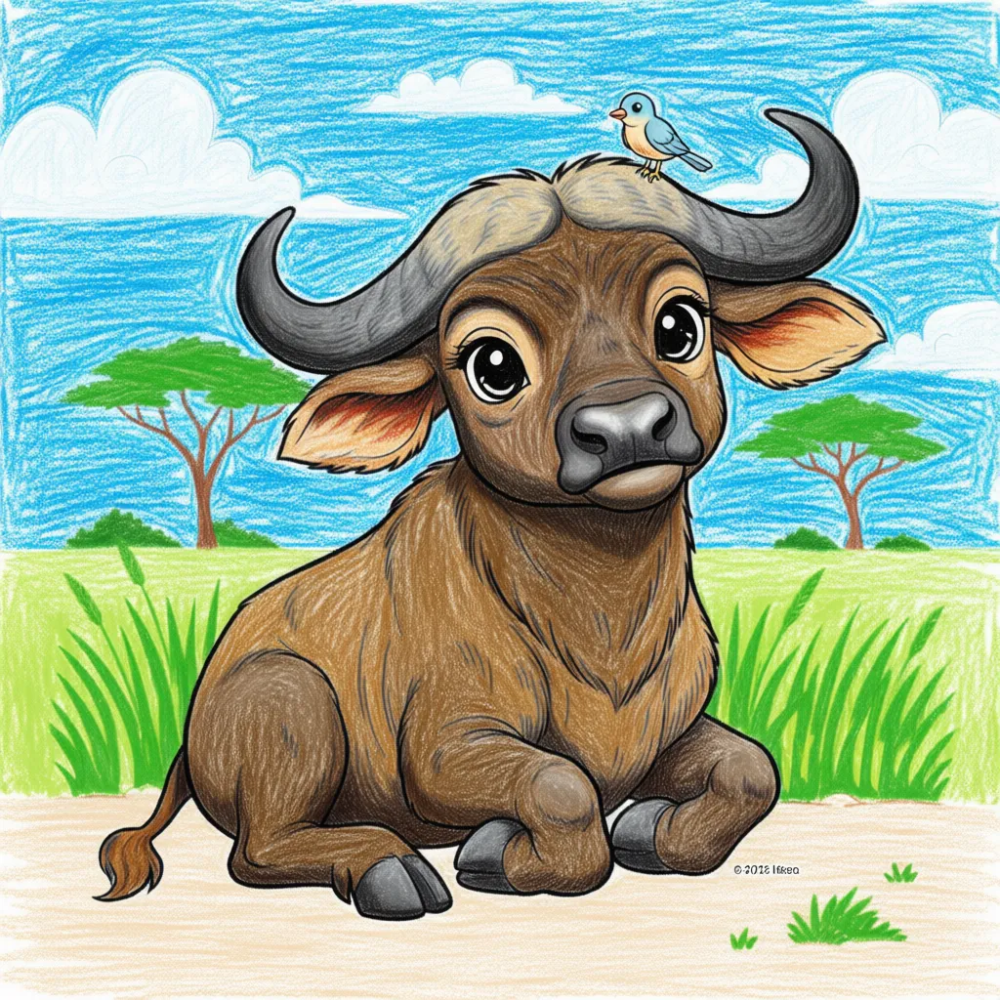

African Buffalo
Syncerus caffer

Key Characteristics
- The African Buffalo is sometimes called 'Black Death' because it's considered one of the most dangerous animals in Africa.
- They live in large herds and stick together, using their numbers to defend against lions.
- Both males and females have large, heavy horns that are fused together across their foreheads, forming a helmet-like 'boss'.
Peculiar Facts (Fun Facts!)
- "Buffalos are known for 'mobbing,' where the whole herd will attack a predator, even lions, to save a member.
- They often follow birds called 'Oxpeckers,' which eat ticks and parasites from their skin, keeping them clean.
- Buffaloes are picky eaters; they prefer to graze on tall, tough grass.